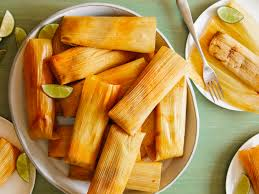

Lasagna
Home

Description
Tamales are a traditional Mesoamerican dish made of masa (corn dough) that is steamed in a corn husk or banana leaf. They are filled with a variety of ingredients, such as meats, cheeses, fruits, or vegetables. Tamales are a staple in many Latin American cuisines and are often served during celebrations and holidays.
Ingredients
- 2 cups masa harina
- 1/2 cup lard or vegetable shortening
- 1 1/2 cups chicken broth
- 1 teaspoon baking powder
- 1/2 teaspoon salt
- 1 cup shredded chicken or pork
- 1/2 cup red chili sauce
- 20 dried corn husks, soaked in warm water
Steps
- In a large bowl, mix masa harina, baking powder, and salt. Add lard and mix until crumbly. Gradually add chicken broth until the dough has a soft, spreadable consistency.
- In another bowl, mix shredded chicken or pork with red chili sauce.
- Lay out a soaked corn husk and spread a thin layer of masa dough in the center. Add a spoonful of the meat mixture on top.
- Fold the sides of the corn husk over the filling, then fold the bottom up and tie with a strip of husk if needed.
- Place tamales upright in a steamer and steam for 1-1.5 hours, or until the masa is firm and easily separates from the husk.
- Let tamales cool slightly before serving. Serve with additional chili sauce if desired.